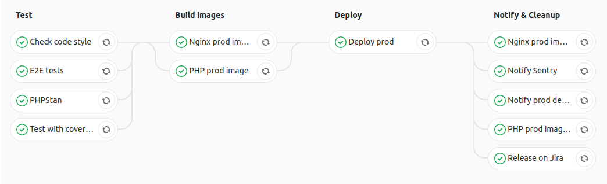

Symfony + Docker
dall'ambiente di sviluppo alla produzione
Alessandro Lai / @AlessandroLai
SymfonyDay 2018 - 19 ottobre 2018, Verona
Chi sono?
- Alessandro Lai
-
Project lead dev @

- @Jean85
- @AlessandroLai
- Coordinatore PUG Milano
- PHP-FIG Secretary
Docker in sviluppo
- Usato dal 2014
- Cross OS
- Niente più ingombranti VM
Docker in prod
Obiettivo: cloud-native, 12-factor app
App realmente pacchettizzata
- NB: solo le app, non i servizi con persistenza!
- Continuous delivery, perché si!
Ambiente speculare dev-prod
Uso "vero" del cloud (Kubernetes)

Container
best practices
Un processo per container
“For example, take a classic Apache/MySQL/PHP stack:
you might be tempted to run all the components in a single container.
However, the best practice is to use 2 or 3 different containers: one for Apache, one for MySQL, and potentially one for PHP if you are running PHP-FPM.”
Build riproducibili
- Versioni fissate, fino alla patch
- Non persistere cache locale durante la build
|
|
Build rapide
- Immagini più piccole possibili
- Eliminare tutto ciò che non è necessario
- Ottimizzare per la cache di build
Stateless
- Non salvare niente su "disco"
- Log in stdout
Best practices for writing Dockerfiles
(Docker.com documentation)
Docker Compose
Vantaggi
- Tool utile sia in dev che in CI
- Configurazione centralizzata
- Flessibilità e personalizzazione
File di configurazione (1/4)
docker-compose.yml
services:
php:
image: php:7.2
depends_on:
- mysql
nginx:
image: nginx:1.14
depends_on:
- php
mysql:
image: mysql:8
File di configurazione (2/4)
docker-compose.override.yml
(da mettere in .gitignore!)
services:
php:
volumes:
- '.:/var/www/facile-it'
environment:
SECRET_TOKEN: ********-****-****-****-************
nginx:
volumes:
- './web:/var/www/facile-it/web'
ports:
- '127.0.0.10:80:80'
File di configurazione (3/4)
docker-compose.override.yml.dist
(da salvare nel repository)
services:
php:
volumes:
- '.:/var/www/facile-it'
environment:
SECRET_TOKEN: 'insert-your-token-here'
nginx:
volumes:
- './web:/var/www/facile-it/web'
ports:
- '80:80'
File di configurazione (4/4)
docker-compose.yml.ci
services:
php:
volumes:
- '.:/var/www/facile-it'
nginx:
volumes:
- './web:/var/www/facile-it/web'
docker-compose.override.yml
Dockerfile
Organizzazione in cartelle
-
docker
-
base
-
php
- etc
- Dockerfile
-
php
- dev
- prod
-
base
1) Estensioni PHP
FROM php:7.2.8-fpm-alpine
RUN apk add --no-cache \
git \
icu-dev \
libmemcached-libs \
zlib-dev \
&& apk add --no-cache --virtual .ext-build-deps \
libmemcached-dev \
&& pecl install -o \
memcached-3.0.4 \
&& docker-php-ext-enable \
memcached \
&& docker-php-ext-install -j5 \
intl \
opcache \
pdo_mysql \
zip \
&& apk del .ext-build-deps2) Utente non-root & Composer
WORKDIR /var/www/facile-it
RUN adduser -D -u 1000 facile-it -G www-data \
&& mkdir -p /home/facile-it \
&& chown -R facile-it /home/facile-it \
&& chown -R facile-it /var/www/facile-it \
## Composer
&& curl -sS https://getcomposer.org/installer | php -- \
--install-dir=/usr/local/bin --filename=composer \
--version 1.7.2
USER facile-it
ARG $GITHUB_TOKEN
RUN composer config -g github-oauth.github.com $GITHUB_TOKEN \
&& composer global require \
--no-suggest --no-interaction \
hirak/prestissimo \
&& rm -rf ~/.composer/cacheDockerfile dev
Tool di sviluppo
- xDebug
- Mount volumi
- Node? Container a parte!
FROM docker.facile.it/facile-it/php-base
USER root
RUN apk --no-cache add \
nano \
sudo \
vim \
wget \
zsh
RUN apk add --no-cache --virtual .xdebug-build-deps $PHPIZE_DEPS \
&& pecl install -o xdebug \
&& docker-php-ext-enable xdebug \
&& apk del .xdebug-build-deps \
&& pecl clear-cache \
&& docker-php-source delete
COPY conf/xdebug.ini /usr/local/etc/php/conf.d/xdebug.ini
USER facile-it
## shell custom? altri tool?Dockerfile prod
Attenzione ai dettagli!
- Cache-friendly
- Sequenza di copia dei file
-
SYMFONY_ENVcomeARG -
Utilizzo di
.dockerignore
node_modules/
var/
vendor/*
.git
.dockerignore
.gitignore
.gitlab-ci.yml
.php_cs.cache
docker-compose*
README.mdFROM docker.facile.it/facile-it/php-base
ARG SYMFONY_ENV=prod
ENV SYMFONY_ENV=$SYMFONY_ENV
ARG COMPOSER_FLAGS="--no-dev --prefer-dist --optimize-autoloader --classmap-authoritative --no-interaction --no-suggest --no-progress --ansi"
COPY --chown=facile-it:www-data composer.* ./
RUN composer install $COMPOSER_FLAGS --no-scripts --no-autoloader \
&& mkdir var
COPY --chown=facile-it:www-data web/app.php web/favicon.ico web/
COPY --chown=facile-it:www-data bin/console bin/
COPY --chown=facile-it:www-data app app
COPY --chown=facile-it:www-data web/build/manifest.* web/build/
COPY --chown=facile-it:www-data src src
ARG RELEASE_SHA
ENV RELEASE_VERSION=$RELEASE_SHA
RUN mv app/config/parameters.yml.$SYMFONY_ENV app/config/parameters.yml \
&& composer install $COMPOSER_FLAGS \
&& bin/console cache:warmupDockerfile web server
FROM nginx:1.13.3
COPY docker/prod/nginx/conf /etc/nginx/
COPY ./web/favicon.ico /var/www/facile-it/web/
COPY ./web/bundles /var/www/facile-it/web/bundles/
COPY ./web/build /var/www/facile-it/web/build/Build automatica
Continuous Integration
&
Continuous Delivery
Obiettivo: pipeline di test & deploy
Docker in Docker
-
Cos'è?
Demone Docker dentro un container Docker -
Perché?
La build è bloccante
Problemi di isolamento e concorrenza
Build, tag & push
- Registry privato
-
Cache di build?
docker pull -
Quale strategia di tag?
NB: i tag sono link
Docker Compose CI config
version: '3.2'
services:
php-base:
image: ${PHP_BASE_IMAGE}
php-prod-latest:
image: ${PHP_PROD_IMAGE}:latest
php-prod:
image: ${PHP_PROD_IMAGE}:${CI_COMMIT_SHA}
build:
dockerfile: docker/prod/php/Dockerfile
context: .
args:
SYMFONY_ENV: prod
RELEASE_SHA: $CI_COMMIT_SHA
cache_from:
- ${PHP_BASE_IMAGE}
- ${PHP_PROD_IMAGE}:latestGitLab CI pipeline setup
image: docker.facile.it/facile-it/ci-tools:1.3.1
services:
- name: docker:18.06.1-dind
alias: docker
variables:
DOCKER_DRIVER: overlay2
DOCKER_HOST: tcp://docker:2375
PHP_PROD_IMAGE: docker.facile.it/facile-it/php-prod
WEB_PROD_IMAGE: docker.facile.it/facile-it/nginx-prod
before_script:
- docker login -u gitlab-ci-token -p $CI_JOB_TOKEN docker.facile.it
- cp docker-compose.yml.ci docker-compose.override.yml
stages:
- Test
- Build
- Deploy
- Notify / CleanupTest jobs
Test with coverage:
stage: Test
coverage: '/Lines:\s*\d+\.\d+%/'
script:
- docker-compose pull --parallel php mysql
- docker-compose up -d mysql
- docker-compose run --rm --no-deps php make ci_test
except: &skip-tests
- /^hotfix-/
PHPStan:
stage: Test
script:
- docker-compose run --rm --no-deps php make phpstan
except: *skip-testsI branch hotfix-* (da usare solo per emergenze!) permettono di fare deploy senza test
Build immagini prod
Build prod images:
stage: Build
script:
- 'docker-compose pull --parallel --ignore-pull-failures
nginx-prod-latest
php-prod-latest'
- 'docker-compose pull --parallel
nginx-base
php-base
yarn'
- make encore-prod-build
- docker-compose build php-prod
- docker-compose build nginx-prod
- docker-compose push php-prod nginx-prod
only: &prod-deployable-branches
- master
- /^hotfix-.*$/
cache:
paths:
- node_modules/
Deploy!
Deploy:
stage: Deploy
script:
- 'kubectl set image deployment/facile-it-app
php="${!PHP_IMAGE_VAR}"
nginx="${!WEB_IMAGE_VAR}"'
- kubectl rollout status deployment/facile-it-app
only: *prod-deployable-branchesRisultato:
$ kubectl set image deployment/facile-it-app php="${!PHP_IMAGE_VAR}" nginx="${!WEB_IMAGE_VAR}"
deployment "facile-it-app" images updated
$ kubectl rollout status deployment/facile-it-app
Waiting for rollout to finish: 1 old replicas are pending termination...
Waiting for rollout to finish: 1 old replicas are pending termination...
Waiting for rollout to finish: 5 of 6 updated replicas are available...
deployment "facile-it-app" successfully rolled outGrazie per l'attenzione!
Contatti
- alessandro.lai85@gmail.com
- alessandro.lai@facile.it (we are hiring!)
- @Jean85
- @AlessandroLai
Domande?
Feedback su Joind.in per favore!